UI/UX and product design
Isabella Qu
Informatics major at the University of Washington on the data science track, minoring in Applied Math. I started in design, and my work now sits between design and data. Two selected design projects below include interactive prototypes.
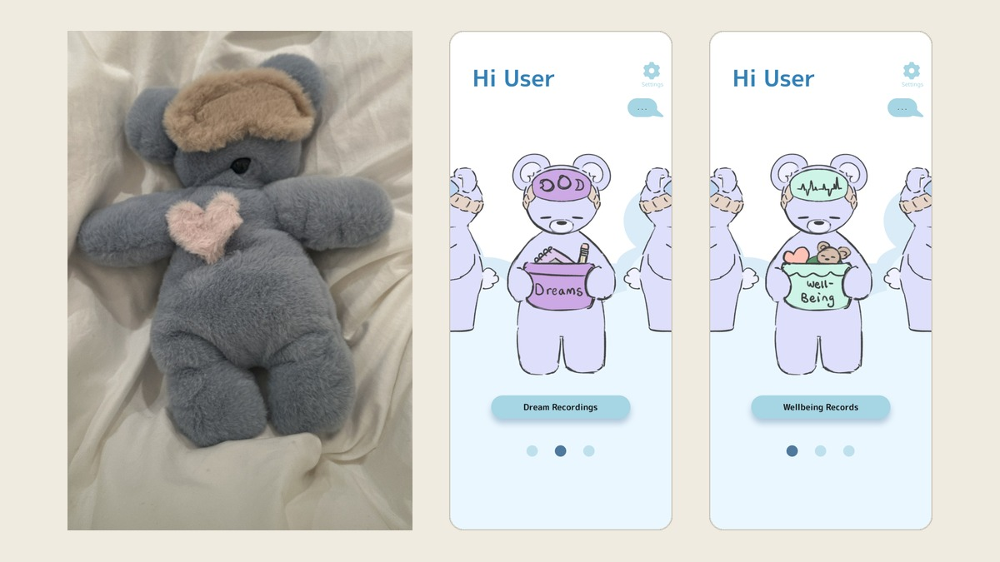
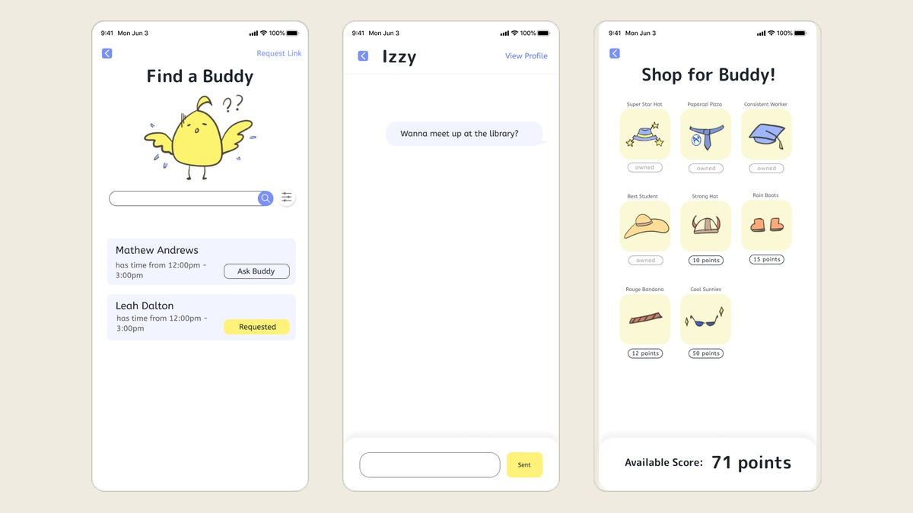
Data Programming
Language: Python.
Intermediate Data Programming
Language: Python.
Technical Foundations of Informatics
Language: R.
Databases and Data Modeling
Language: SQL. Relational models, SQL queries, entity-relationship modeling, three-tier architectures, and database application implementation, linking data modeling choices to social justice and societal outcomes.
More coursework and data projects coming as I complete them.
About me
I'm an Informatics major at the University of Washington in Seattle, on the data science track with a minor in Applied Math. I'm originally from Toronto, and my final path is data science.
I began in industrial design, then moved to UX and informatics because I wanted to understand how people actually use things. That led me to data science, where I can ask those questions with evidence. The design work here is where I started, and I'll keep adding coursework and data projects as I go. My writing has also been published in the Journal of Student Research.
I also co-founded Co.Wishes, an initiative that donates art supplies.
Skills and tools
Languages
Developer tools
UI/UX design
User research
Spoken languages
Interests
Baking and cooking, drawing, going to music festivals, thrifting and reselling secondhand finds, and planning trips.
RISD Pre-College Program, Certificate of Completion
Summer 2023. Fashion design, where "We Are Receipts" was made. View certificate
Project Prologue Summer Arts and Writing Challenge
"We Are Receipts," fashion design.
Journal of Student Research
"The Feasibility of Full Sustainability in the Fashion Industry," Vol. 13, No. 2, 2024.
Young Voices Magazine
Artwork published in 2024, "My Head."
Pomegranate Series
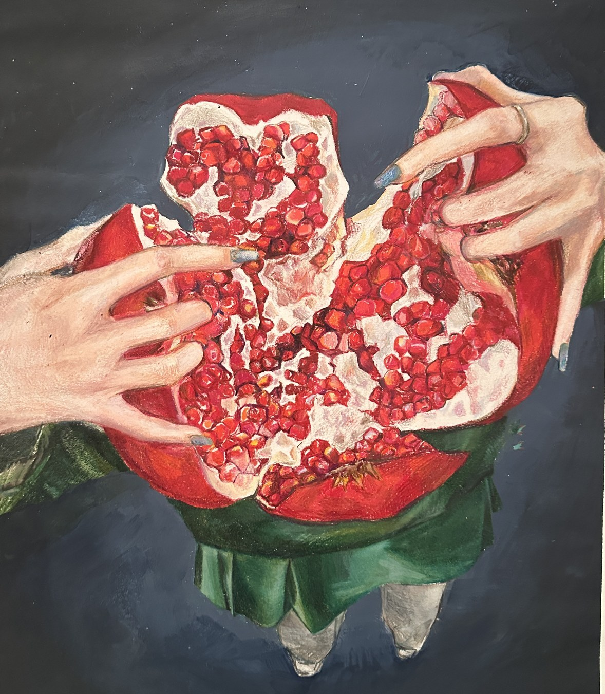
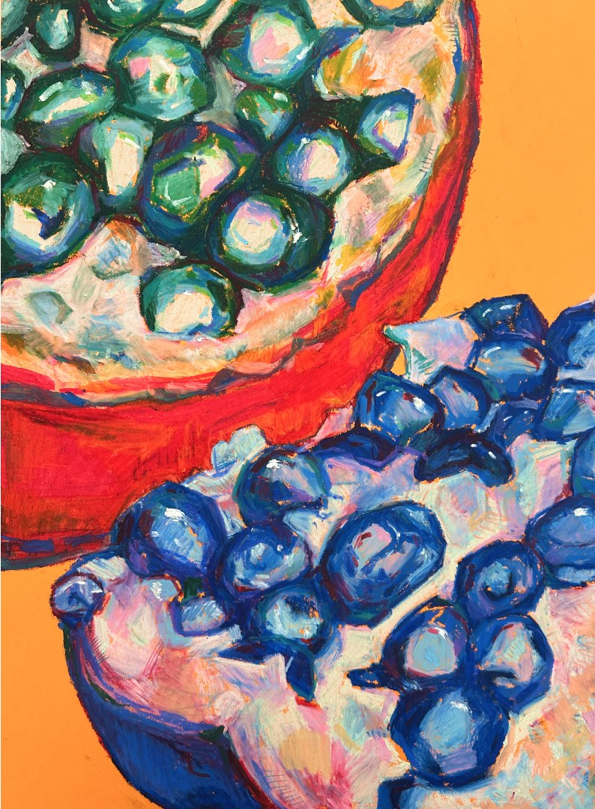
We Are Receipts
June to July 2023 · Individual project (RISD Pre-College) · Physical, Procreate, sewing · Fashion design
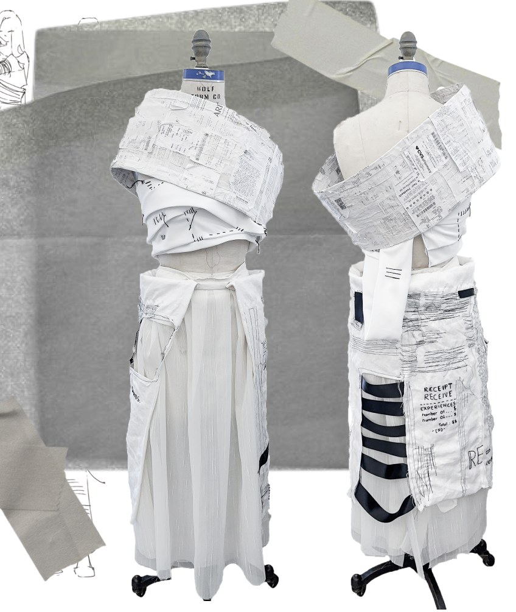
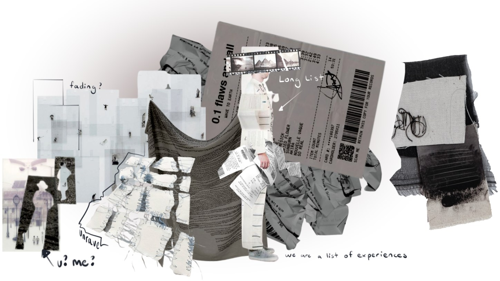
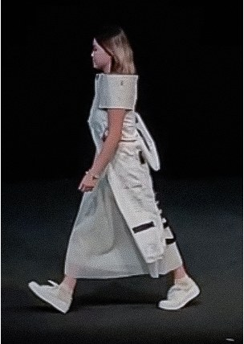
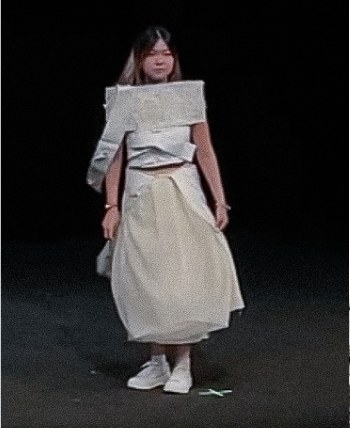
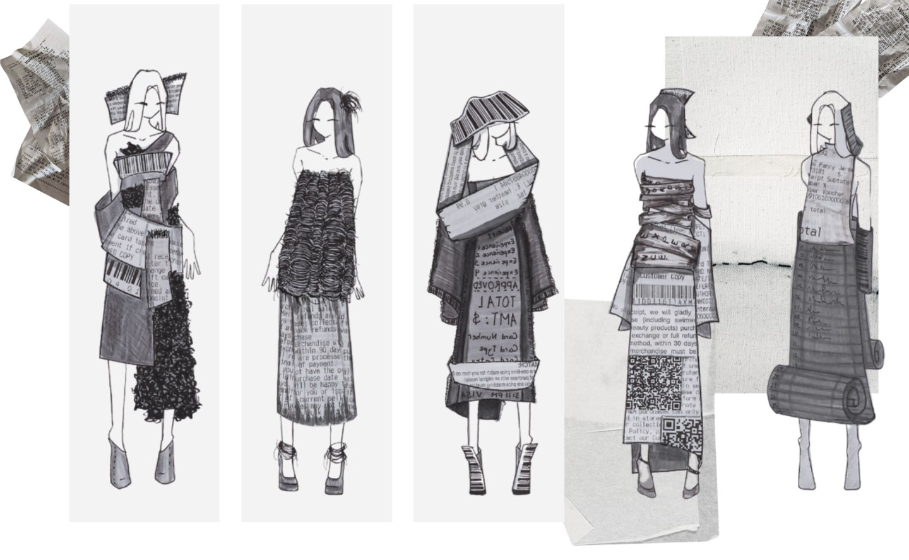
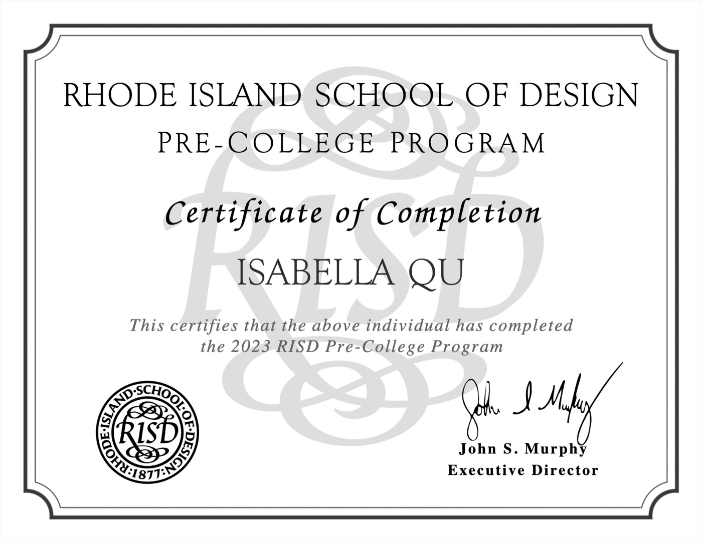
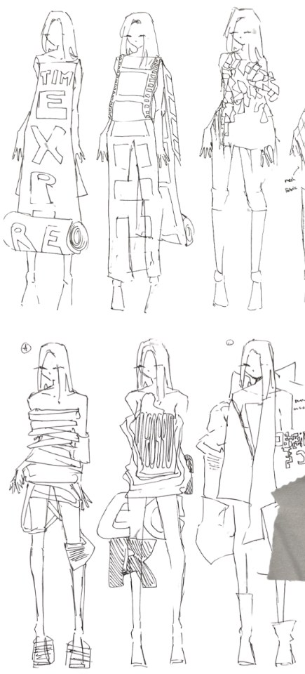